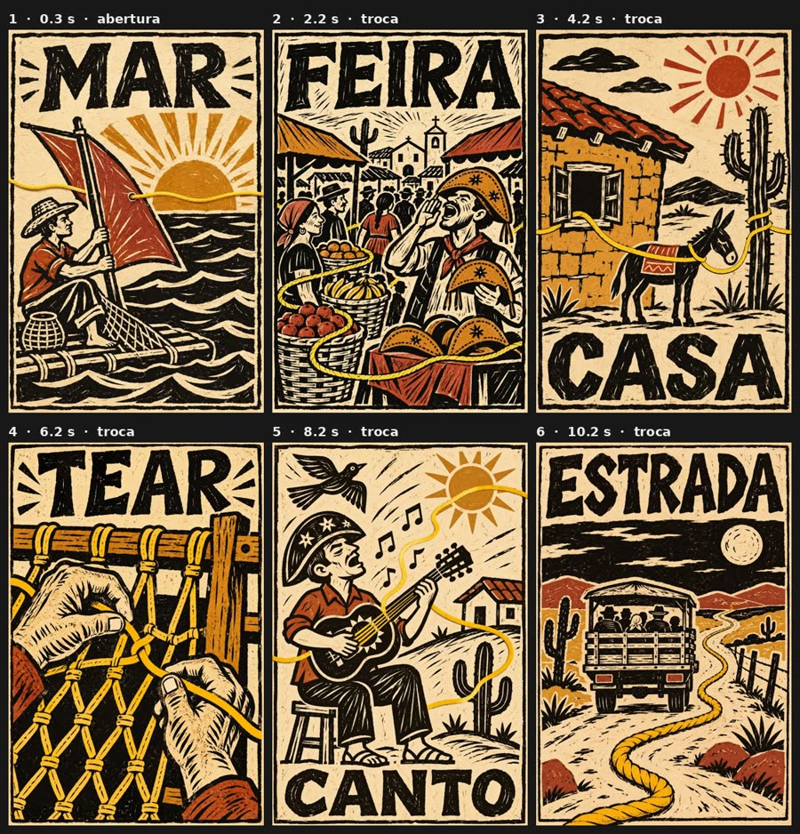
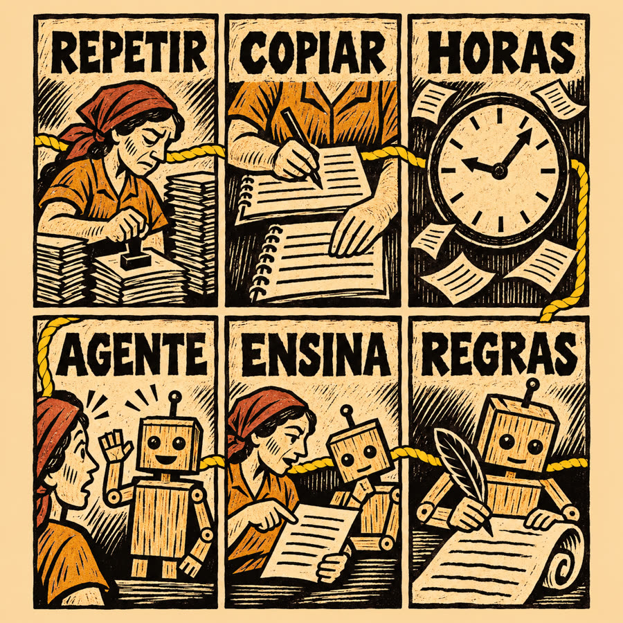
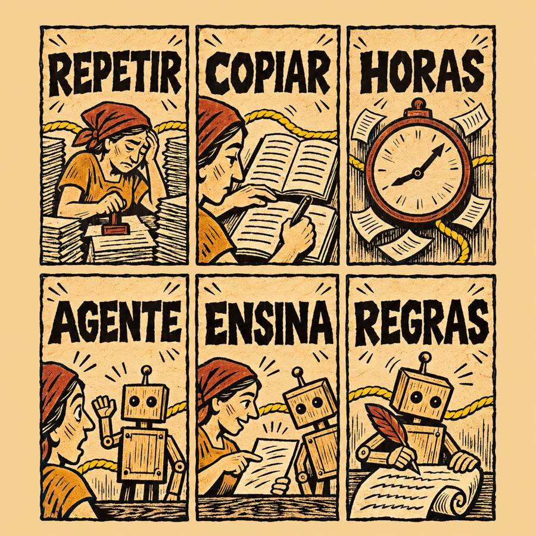

estilo em skill · kit grátis · Claude Code ou Codex
Todo vídeo seu no mesmo estilo, só trocando o tema
Você vê um vídeo com um visual que adora e não consegue repetir: cada vídeo seu sai com uma cara diferente, e o seu canal fica sem identidade. Com o método estilo em skill, você faz quantos vídeos quiser no estilo daquele vídeo que admira, só trocando o tema. Vou te mostrar como.
Você vê um vídeo com um estilo visual que adora, tenta repetir e cada vídeo seu sai com uma cara diferente. O estilo em skill é um kit grátis que estuda a linguagem visual desse vídeo (cores, letras, composição, movimento) e guarda tudo numa skill, um arquivo de instruções que o Claude Code ou o Codex segue. Depois você diz só o tema, e a skill faz o vídeo inteiro com a mesma cara: storyboard, cenas animadas, narração numa voz só, uma trilha e uma conferência antes de dizer "pronto". É para quem cria vídeo curto e não programa; você precisa do Claude Code ou do Codex, de uma ferramenta que gere imagem e de três programas grátis no computador.
Cada pedido para a IA começa do zero. Ela não lembra as cores, as letras nem o jeito de enquadrar do vídeo anterior. Você escreve "estilo cordel" e cada vez ela entende uma coisa. O resultado: um vídeo com uma cara, o próximo com outra, e o seu canal sem identidade.
O que a skill estuda: a linguagem
Cores com o código exato de cada uma, tipo de letra, onde fica o assunto no quadro, textura, luz, como a câmera se mexe, como uma cena passa para a outra, o ritmo e o que quebraria o estilo.
O que ela nunca copia: o conteúdo
Personagens, rostos, logos, marcas, textos, falas e a história do vídeo de referência ficam de fora. O tema e as falas são sempre seus.
Onde o estilo fica guardado
Numa "bíblia do estilo" dentro da skill. Todo pedido de imagem leva a mesma descrição, então o décimo vídeo sai com a mesma cara do primeiro.
Palavras que aparecem aqui
Skill
uma pasta com um arquivo de instruções (e scripts) que ensina o Claude Code ou o Codex a fazer uma tarefa do começo ao fim, sempre do mesmo jeito.
Bíblia do estilo
o documento que descreve o estilo com regras conferíveis: cores em código, letra, composição, o que não fazer e uma frase que vai em todo pedido de imagem.
Storyboard
um desenho único com várias cenas lado a lado (até 6), como uma página de quadrinho. O kit corta esse desenho em cenas separadas.
Motor
quem dá movimento às cenas. O motor local, grátis, faz a câmera passear pela ilustração no seu computador.
Trilha
a música de fundo. O kit usa uma só do começo ao fim e abaixa o volume quando a voz fala.
Dissolve
a passagem suave de uma cena para a outra: uma imagem some enquanto a próxima aparece.
Manifesto
uma ficha que a skill grava junto do vídeo, com a lista de tudo o que foi usado e feito; a conferência lê essa ficha.
Como funciona
Do vídeo que você admira ao vídeo conferido
Você faz a parte do estilo uma vez. Depois disso, cada vídeo novo começa só com o tema.
Vídeo de referência→Quadros→Bíblia do estilo→Skill→Storyboard 2×3→Cenas animadas→Uma voz→Uma trilha→Vídeo conferido
1
O kit escolhe os quadros
Do vídeo de referência, ele tira sozinho de 5 a 8 imagens diferentes entre si e monta uma folha com todas.
2
A IA escreve a bíblia
Você cola um prompt pronto no Claude Code ou no Codex. Ele olha os quadros e descreve o estilo, sem copiar nada do conteúdo.
3
O estilo vira skill
Um comando instala a skill com a bíblia dentro, no Claude Code ou no Codex. Isso é feito uma vez por estilo.
4
Você diz o tema
E mais quatro dados, com padrão pronto: formato (vertical, deitado ou quadrado), duração, resolução e motor.
5
Storyboard no estilo
A skill escreve o roteiro (uma palavra grande e uma frase curta por cena) e pede o storyboard. O segundo storyboard recebe o primeiro como referência, para manter os mesmos personagens.
6
Anima, narra e confere
Cada cena ganha movimento, a narração entra numa voz só, uma trilha toca do começo ao fim e um script confere o vídeo. Só então ela diz "pronto".
Quanto vídeo cabe em cada storyboard
Cada cena dura 2,5 segundos e cada storyboard tem até 6 cenas (15 segundos). Vídeo mais longo usa vários storyboards, feitos um de cada vez. Duração que não fecha em 2,5 vai para a mais próxima, com aviso (17 s vira 17,5 s).
Duração
Cenas
Storyboards
Desenho no vertical (linhas × colunas)
10 s
4
1
2 × 2
15 s
6
1
2 × 3
20 s
8
2
2 × 2 + 2 × 2
30 s
12
2
2 × 3 + 2 × 3
45 s
18
3
2 × 3, três vezes
No formato deitado (16:9) o desenho cheio é 3 linhas × 2 colunas. Como usar ↓
A demo
Cordel, do começo ao fim
Para não usar o vídeo de ninguém, o estilo de referência da demo é próprio: seis quadros de xilogravura de cordel (papel creme, preto chapado, ocre, vermelho terroso, letras entalhadas e um cordão amarelo que liga as cenas), feitos para este kit e juntados num vídeo de 12 segundos. Com eles, o fluxo inteiro rodou num tema que não tem nada a ver com cordel: "Como um agente de IA tira o trabalho repetido do seu dia", 30 segundos, vertical.

O estilo de referência. Os 6 quadros que o kit escolheu sozinho. Mar, feira, casa, tear, canto e estrada são só a referência: o vídeo novo não repete nenhuma dessas cenas, só o jeito de desenhar.

Storyboard 1, tema novo. Seis cenas num desenho só, na mesma gravura: uma mulher de lenço vermelho cansada do trabalho repetido e um ajudante de madeira (o agente). O cordão amarelo passa de uma cena para a outra.Storyboard 2. Recebeu o primeiro como referência, para manter a mesma mulher e o mesmo ajudante nas outras seis cenas.O vídeo pronto (30 s, vertical, com som). A conferência passou em tudo:
duração de 30,0 segundos, como foi pedido
1080 × 1920, o tamanho do vertical
som no vídeo e voz na narração (nada mudo)
12 frases faladas, conferidas à parte com uma transcrição local: batem com o roteiro
uma trilha só, abaixando sob a voz
A folha final: um quadro de cada cena, tirado do vídeo pronto. É ela que se olha antes de dizer "pronto": palavra certa, letra inteira, mesmo estilo em todas. Animar as 12 cenas levou 78 segundos nesta máquina, sem nenhuma IA de vídeo.
O que mudou
A skill melhora depois de cada teste
A skill não nasce pronta. Depois de cada vídeo, olha-se a folha final, anota-se o que saiu errado e muda-se a regra, não só o pedido. Na demo foram seis mudanças.

Tentativa 1 (recusada): palavras de borda a borda e pouco preto. No zoom, a primeira e a última letra sumiam, e a gravura parecia desenho colorido.Tentativa 2 (aceita): mais massa preta e o cordão passando de uma cena para a outra. As palavras continuaram grandes, e por isso a correção foi para o recorte (item 2).
1 · letras
Palavra grande demais perdia letras no zoomA bíblia passou a pedir a palavra com no máximo 60% da largura e pelo menos um terço de preto em cada cena.
2 · recorte
Pedir de novo não adiantouA ferramenta de imagem ignorou os 60% outra vez. A garantia saiu do pedido e foi para o recorte, que agora deixa uma margem de papel em volta de cada cena. A palavra cabe inteira mesmo no zoom máximo.
3 · cordão
O cordão atravessando confundia o corteO recorte procura o espaço entre as cenas e se perdia quando o cordão amarelo passava por cima. Agora ele tolera um detalhe atravessando.
4 · voz
A voz do computador inventava pedaçoFrase de quatro palavras saía com quase 5 segundos e empurrava as seguintes até passar do fim. Agora a fala comprida demais para o número de palavras é gerada de novo (até 3 vezes) e fica a mais curta.
5 · cortes
Um corte agressivo engoliu "de novo"Para tirar o murmúrio depois da frase, o primeiro corte comeu palavra de verdade (a transcrição pegou). O corte ficou cuidadoso e é testado dos dois lados: tira o murmúrio, mantém a última palavra.
6 · cena 3
Um som alto sem palavraSó ouvindo ou transcrevendo dava para pegar. Agora dá para refazer só a cena com problema. Resultado: 12 de 12 frases certas.
A regra que fica: se o mesmo erro volta, mude a regra (na bíblia, nas regras do storyboard ou no script), não só o pedido. Como usar ↓
Limites honestos
O que o kit não faz (ainda)
Melhor saber antes de escolher o estilo.
Detalhe fino fica mole
Cada storyboard sai com cerca de 1254 × 1254 pixels; cada cena tem uns 370 × 600 e é ampliada para 1080 × 1920. Estilos chapados (gravura, recorte, flat) aguentam bem.
Texto desenhado erra
A ferramenta de imagem pode trocar letra. Confira cada palavra ampliada. Palavras curtas e sem acento erram menos.
O desenho não se mexe
O motor local passeia a câmera pela ilustração e liga as cenas com dissolve. Personagem andando pede um motor de IA de vídeo, não testado neste kit.
Continuidade não é garantida
O storyboard anterior vai como referência, mas a mesma pessoa pode mudar um detalhe. Olhe antes de seguir.
A voz do computador inventa som
O kit corta o que é bem mais baixo que a fala. Um som alto sem palavra só se pega ouvindo ou transcrevendo.
A bíblia é escrita pela IA
Ela olha os quadros e pode errar uma cor. Confira as cores e a lista do que não fazer antes de usar.
Só o que você pode usar
Referência e música têm de ser suas ou com licença. O método copia a linguagem visual, nunca personagens, logos ou textos.
Mac sem teste
O kit foi feito e testado no Linux (Ubuntu). No Mac, a instalação da skill é pelo caminho manual do guia.
Parte técnica
O kit: para quem quer fazer a própria skill
Daqui para baixo é a parte técnica: instalar, tirar os quadros, criar a skill e pedir o vídeo. Você não precisa desta parte para entender o que está acima.
O que é
O que vem no kit
Um kit aberto (MIT) que transforma o estilo de um vídeo numa skill. Ele não chama nenhuma API: tudo roda no seu computador, e a imagem do storyboard sai da ferramenta que você já usa.
Pasta ou arquivo
O que faz
scripts/quadros.py
tira de 5 a 8 quadros diferentes do vídeo de referência (troca de cena + descarte de parecidos) e monta a folha.jpg
prompts/criar-skill.md
o prompt que você cola no Claude Code ou no Codex para escrever a bíblia do estilo
scripts/instalar.sh
instala a skill no Claude Code (.claude/skills/) ou no Codex (.agents/skills/)
molde/estilo-em-skill/
o molde da skill: SKILL.md, references/ (bíblia, regras do storyboard e do vídeo, lições), modelos/ (pedidos de storyboard e de vídeo) e scripts/ (cenas.py, pedido_storyboard.py, recortar.py, animar.py, narrar.py, montar.py, validar.py, folha.py)
tests/rodar.sh
os testes do kit, sem pytest
exemplos/cordel/
a demo completa: referência, quadros, bíblia, skill instalada, storyboards, roteiro, painéis, vídeo final, manifesto e LICOES.md
Pré-requisitos
O que você precisa
Você não escreve código: copia comandos e conversa com a IA.
Claude Code ou Codex
Para olhar os quadros, escrever a bíblia e rodar a skill. Abra no terminal, na pasta do kit, com claude ou codex.
Uma ferramenta que gere imagem
Para o storyboard. No Codex, a image_gen da assinatura. No Claude Code, a que você tiver; ou gere à mão e salve no lugar que a skill pedir.
ffmpeg, Python 3 e Pillow
ffmpeg corta, anima e junta (traz o ffprobe). Python 3 roda os scripts. Pillow mexe nas imagens. Os três são grátis.
Uma voz
Você grava a narração, ou usa uma voz de computador que rode na sua máquina.
Uma música
Sua ou com licença, em .mp3 ou .wav. Sem trilha, a skill para e pergunta.
Os passos 1 a 4 você faz uma vez por estilo. Do passo 5 em diante é cada vídeo novo.
1
Rode os testes do kit
Confirma que ffmpeg, Python e Pillow estão no lugar. Leva alguns minutos e termina em 24/24 testes passaram. O script usa o comando timeout, que o Mac não traz.
bash tests/rodar.sh
2
Tire os quadros do vídeo de referência
Escolha o vídeo cujo estilo você quer (um que você pode usar) e salve na pasta do kit com o nome ref.mp4 (ou troque ref.mp4 no comando pelo nome do seu arquivo). O script escolhe de 5 a 8 quadros diferentes e monta a folha de contato. Abra a folha.jpg e veja se os quadros mostram o estilo.
Copie o molde da bíblia, abra o Claude Code (claude) ou o Codex (codex) na pasta do kit e cole o texto de prompts/criar-skill.md (a parte depois da linha de três tracinhos). A IA olha os quadros, preenche a bíblia e faz uma imagem de teste com um assunto novo. Confira as cores e o "o que não fazer". No fim, não pode sobrar nenhum PREENCHER.
mkdir -p estilocp molde/estilo-em-skill/references/estilo.md estilo/estilo.md# depois que a IA preencher, este número tem de ser 0:grep -c PREENCHER estilo/estilo.md
4
Instale a skill
Dê um nome curto ao estilo (ex.: meu-estilo). O Claude Code lê as skills da pasta .claude/skills/ do projeto que você abre; o Codex lê .agents/skills/. Sem --projeto, a skill vai para a pasta atual (a do kit).
# Claude Codebash scripts/instalar.sh meu-estilo claude --estilo estilo/estilo.md# Codexbash scripts/instalar.sh meu-estilo codex --estilo estilo/estilo.md# instalar em outra pasta de projetobash scripts/instalar.sh meu-estilo claude --estilo estilo/estilo.md --projeto ~/meus-videos# Claude Code, valendo para todos os projetosbash scripts/instalar.sh meu-estilo claude --estilo estilo/estilo.md --destino ~/.claude/skills/meu-estilo
Caminho manual (Mac, ou se o script falhar): copie o molde, ponha a sua bíblia e troque o nome no cabeçalho do SKILL.md. Para o Codex, troque .claude/skills por .agents/skills.
Depois de instalar, abra uma sessão nova do Claude Code ou do Codex nessa pasta para ele enxergar a skill.
5
Peça o vídeo
Na pasta onde a skill está instalada, abra o Claude Code ou o Codex e escreva o pedido. O que faltar dos cinco dados (tema, formato, duração, resolução, motor) a skill pergunta, sugerindo o padrão (vertical, 15 s, 1080 × 1920, motor local). Ponha uma música na pasta assets/trilha/, dentro da pasta onde você abriu o Claude Code ou o Codex, ou diga qual usar.
use a skill meu-estilo para um vídeo sobre como organizar a semana, 9:16, 15 segundos, motor local
6
O que a skill roda (e você pode rodar à mão)
Ela escreve o roteiro.json (uma palavra grande e uma fala de até 6 palavras por cena), gera os storyboards na ferramenta de imagem, olha cada um e segue pelos scripts. Estes são os comandos, na ordem, a partir da pasta do projeto (testados com os arquivos da demo; a duração tem de bater com o número de cenas do roteiro):
S=.claude/skills/meu-estilo/scriptspython3 $S/cenas.py --tema "Seu tema" --duracao 30 --formato 9:16 --resolucao 1080x1920 --motor local --roteiro roteiro.jsonpython3 $S/pedido_storyboard.py# gere saida/storyboards/storyboard-1.png (e -2.png...) com o pedido de cada umpython3 $S/recortar.py --plano saida/plano.jsonpython3 $S/animar.pypython3 $S/narrar.py --arquivo voz.wavpython3 $S/montar.py --trilha minha-musica.mp3python3 $S/validar.py --duracao 30 --resolucao 1080x1920python3 $S/folha.py
Formato do roteiro, se você quiser escrever o seu:
{"personagem": "quem aparece em várias cenas, descrito sempre igual",
"cenas": [{"texto_tela": "PALAVRA", "fala": "frase curta falada", "acao": "o que se vê", "camera": "zoom_in"}]}
Outras formas de narrar: --falas-dir falas/ (uma gravação por cena), --comando '<tts> {texto} {saida}' (qualquer voz que rode na sua máquina) e --refazer 3 (refaz só a cena 3). O --edge usa um serviço online e não foi testado.
7
Confira e melhore a skill
Só é "pronto" quando o validar.py imprime PASSOU e você olha a final/folha-final.jpg. O que saiu errado vai para references/licoes.md da skill; se o erro voltar, mude a regra na bíblia, em references/regras-storyboard.md ou no script.
# a saída da demo
ok manifesto com status completo
ok 30 arquivos do manifesto existem
ok duração 30.00 s (pedido 30 s ± 0,5)
ok resolução 1080x1920
ok áudio do vídeo com som (média -20.2 dB, pico -3.9 dB)
ok narração com voz (média -18.9 dB)
PASSOU: vídeo conferido, pode dizer pronto.
8
Confira a demo no seu computador
O repositório guarda o vídeo final, o manifesto e a voz da demo, mas não os arquivos intermediários (painéis em PNG, clipes, vídeo mudo). Por isso, num clone, a conferência usa --sem-intermediarios e olha 5 arquivos em vez de 30.
cd exemplos/cordelpython3 skill/scripts/validar.py --sem-intermediarios --duracao 30 --resolucao 1080x1920
Motores
Quem dá movimento às cenas
O kit não chama nenhuma API. Nos motores de IA de vídeo, ele só escreve os pedidos; quem roda é você, na sua conta.
Motor
Estado
O que faz
local
testado
grátis, sem IA de vídeo: cada cena ganha um movimento de câmera lento (zoom lento, padrão 1,18× e no máximo 1,25×, ou pan) e as cenas se ligam por dissolve, na duração exata
kling
não testado neste kit
animar.py --motor kling --so-prompts grava em saida/prompts-kling.sh os comandos kling image_to_video de cada cena; nada é enviado
seedance / higgsfield
não testado neste kit
animar.py --motor seedance --so-prompts grava em saida/prompts-seedance.md um prompt por storyboard (tempo de cada cena, câmera, texto, transição, fala, sem música) para colar no site
Com kling ou seedance, os clipes que você gerar voltam para saida/clipes/ e a skill segue da narração em diante.
Testes
O que o kit garante
bash tests/rodar.sh roda 24 testes com imagens sintéticas e tons no lugar de voz e música (24/24 passando em 13/11/2026, no Ubuntu).
Quadros diferentes
quadros.py usa a troca de cena do ffmpeg e descarta parecidos (desenho e cor); vídeo com poucas trocas cai para quadros espaçados.
Recorte que acha a calha
recortar.py acha o espaço entre os painéis (claro ou escuro, mesmo com o cordão cruzando); se não achar, corta em grade fixa. Põe respiro para o zoom não cortar a palavra.
Duração exata
animar.py não encurta o vídeo com o dissolve: 30 s pedidos, 30 s entregues.
Voz que cabe
narrar.py corta silêncio das pontas, acelera até 15% se precisar, avisa quando a fala não cabe e recusa voz muda.
Uma trilha só
montar.py usa a mesma música do começo ao fim (volume 0,5, abaixando sob a voz, fade no fim). Sem trilha, para e pergunta.
Conferência de verdade
validar.py confere os arquivos do manifesto, duração ±0,5 s, resolução, áudio e narração que não são silêncio, trilha e status: completo. Falhou, sai com erro e diz o que falta.
Roadmap
Próximos passos
Hoje
Motor local testado, demo cordel completaMolde da skill, instalação no Claude Code e no Codex, 24 testes, vídeo de 30 s conferido e as lições da demo.
Próximo
Testar os motores de IA de vídeokling e seedance/higgsfield já geram os pedidos; falta rodar numa conta e conferir o resultado.
Depois
MacTestar a instalação e os testes no Mac (hoje o instalar.sh usa o sed do Linux).